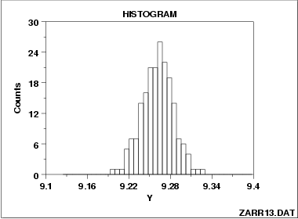

|
1.
Exploratory Data Analysis
1.3. EDA Techniques 1.3.3. Graphical Techniques: Alphabetic 1.3.3.14. Histogram
|
|||
|
Symmetric, Moderate- Tailed Histogram |
 | ||
| Note the classical bell-shaped, symmetric histogram with most of the frequency counts bunched in the middle and with the counts dying off out in the tails. From a physical science/engineering point of view, the normal distribution is that distribution which occurs most often in nature (due in part to the central limit theorem). | |||
| Recommended Next Step | If the histogram indicates a symmetric, moderate tailed distribution, then the recommended next step is to do a normal probability plot to confirm approximate normality. If the normal probability plot is linear, then the normal distribution is a good model for the data. | ||